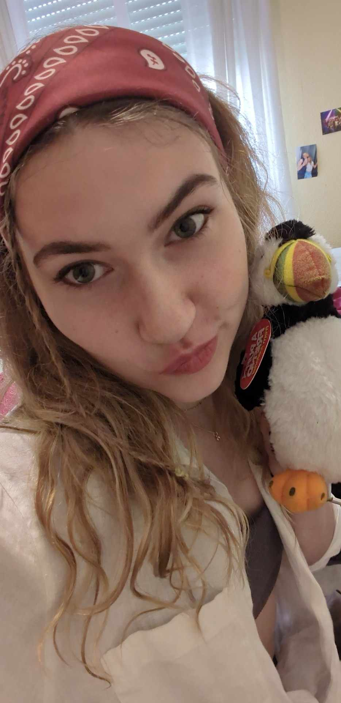

Welkom

Hallo bloglezertjes
Op nieuwjaar heb ik meegedaan aan een trend om nieuwjaarsresoluties te bepalen voor 2026.
Op “Winter solstice” schreef ik 12 resoluties waar ik aan zou werken in 2026 en elke dag verbrandde ik
1 resolutie (zonder te kijken welke resolutie het was). Op 1 januari zou het lot bepaald hebben op welke
resolutie ik mij moet focussen in 2026. Dit jaar was dat “nieuwe hobby's ontdekken”.
Met behulp van mijn vriend Siemen heb ik deze blog opgericht en kunnen mijn denkbeeldige bloglezertjes
mijn ervaringen meevolgen. Ik probeer nieuwe hobby’s uit om hopelijk iets te vinden wat ik graag doe
en ook om nieuwe dingen uit te proberen en skills te verwerven.
Aja en ik zal hier ook de voortgang van mijn gilmore girls filmlijst bijhouden. Veel leesplezier!